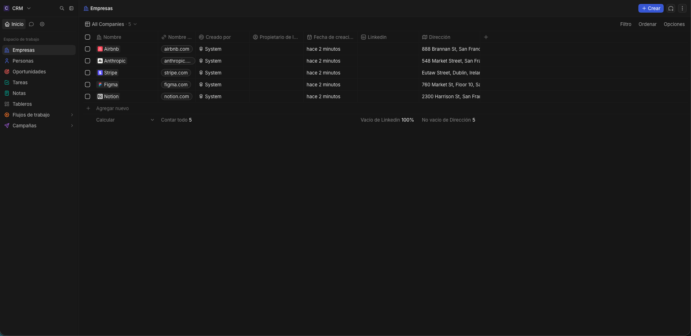
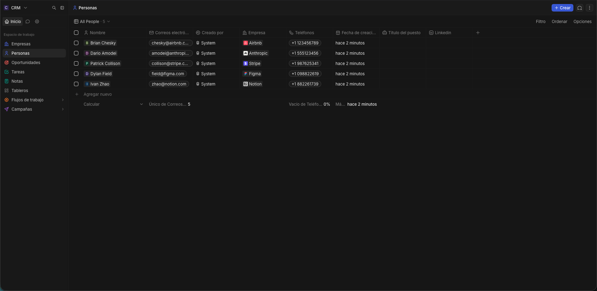
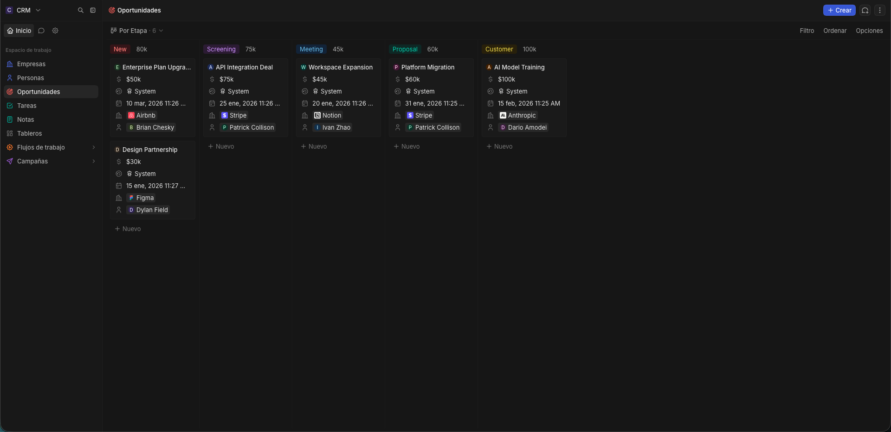
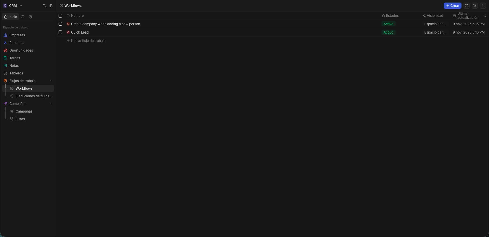
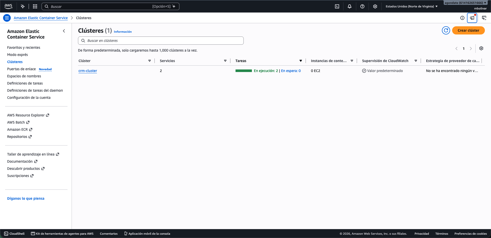
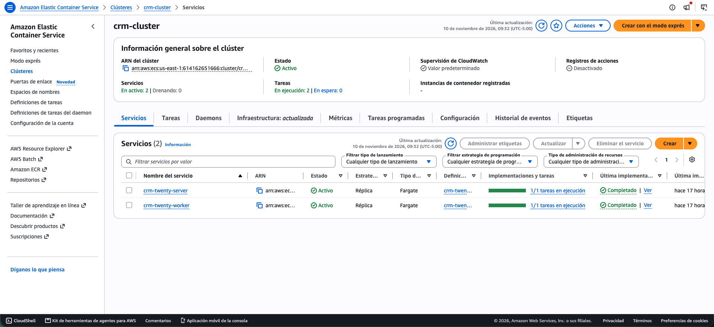
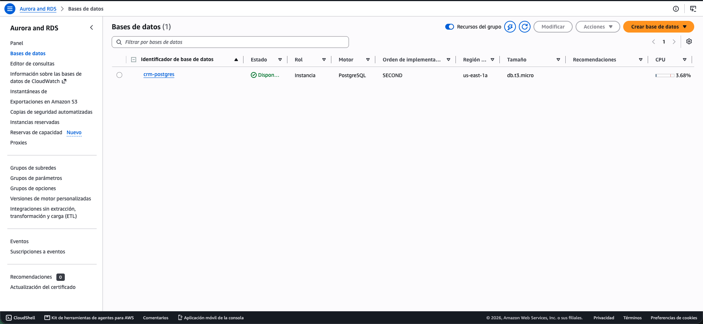
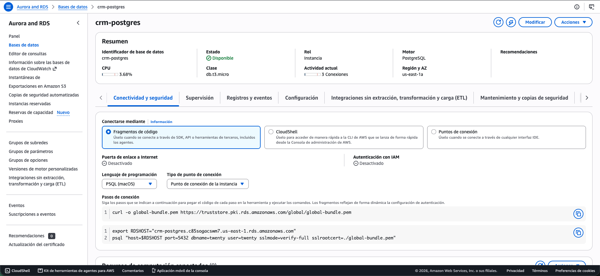
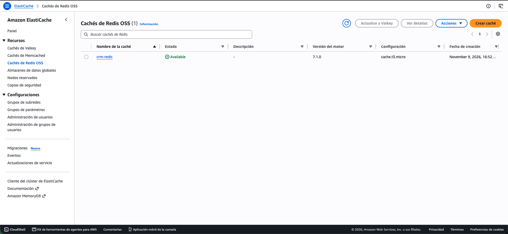
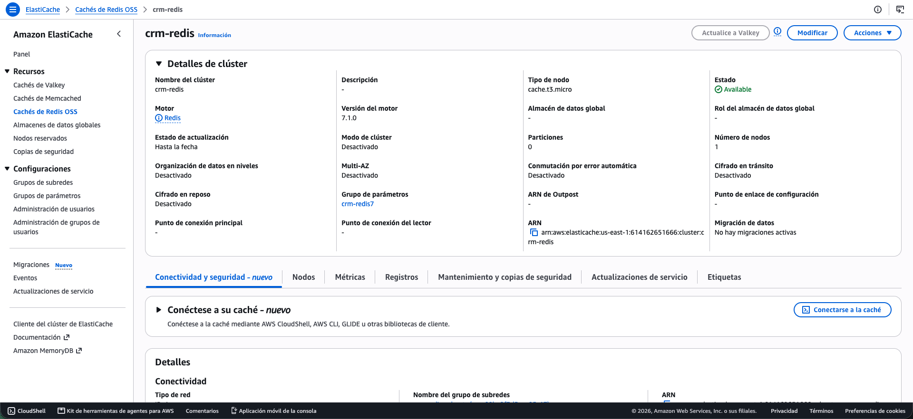

INSTITUTO TECNOLÓGICO METROPOLITANO – ITM Facultad de Ingenierías
Introducción a Modelos de Informática en la Nube
Despliegue de un CRM con Infraestructura como Código en AWS
Terraform · Contenedores en ECS Fargate · Bases de datos gestionadas relacional (RDS PostgreSQL) y en memoria (ElastiCache Redis)
Integrantes
Zara Ramírez Ortiz Santiago Álzate Múnera Mateo Bolívar Arroyave
Docente: Enrique José González de la Rosa
Medellín, 13 de noviembre de 2026
Contenido
Introducción
Contexto
Objetivos
Arquitectura de la solución
Implementación con Terraform
Despliegue y evidencias
Estimación de costos
Problemas encontrados y soluciones
Conclusiones
Referencias bibliográficas
1. Introducción
Este trabajo presenta el diseño y despliegue automatizado de un sistema de gestión de relaciones con clientes (CRM) en la nube pública de Amazon Web Services (AWS), utilizando exclusivamente Infraestructura como Código (IaC) con Terraform. Se eligió la Opción B del enunciado: una sola nube en la que la aplicación utiliza dos tipos de bases de datos gestionadas, una relacional (Amazon RDS for PostgreSQL) y una en memoria (Amazon ElastiCache for Redis).
Como aplicación se utilizó Twenty, un CRM de código abierto distribuido como imagen de contenedor, que de forma nativa requiere precisamente PostgreSQL y Redis. Los contenedores se ejecutan en Amazon ECS sobre AWS Fargate (sin administrar servidores) y se exponen a internet a través de un Application Load Balancer.
2. Contexto
2.1 ¿Qué es un CRM?
Un CRM (Customer Relationship Management) es un sistema de información que centraliza los datos y las interacciones de una organización con sus clientes actuales y potenciales: empresas, contactos, oportunidades de venta, tareas, notas y comunicaciones. Su propósito es mejorar la retención de clientes, dar visibilidad al embudo comercial y apoyar la toma de decisiones con datos. Productos como Salesforce, HubSpot o Zoho dominan el mercado como SaaS, mientras que alternativas de código abierto como Twenty, SuiteCRM o EspoCRM permiten que la organización aloje la solución en su propia infraestructura y conserve el control de sus datos.
2.2 Infraestructura como Código
La Infraestructura como Código es la práctica de definir redes, servidores, bases de datos y demás recursos en archivos de texto versionables, en lugar de crearlos manualmente desde una consola. Esto permite que la infraestructura sea reproducible (el mismo código produce el mismo entorno), auditable (los cambios quedan en el control de versiones), revisable antes de aplicarse (terraform plan) y desechable (terraform destroy elimina todo, evitando costos innecesarios).
Terraform, de HashiCorp, es una herramienta IaC declarativa que usa el lenguaje HCL: el usuario describe el estado deseado y Terraform calcula el orden de creación a partir de las dependencias entre recursos, guardando el estado real en un archivo terraform.tfstate. Mediante providers soporta múltiples nubes; en este trabajo se usa el provider oficial hashicorp/aws.
2.3 Contenedores y bases de datos gestionadas
Los contenedores empaquetan una aplicación con todas sus dependencias, de modo que se ejecuta igual en cualquier entorno. AWS Fargate ejecuta contenedores sin que el usuario administre máquinas virtuales, y Amazon ECS se encarga de mantener el número deseado de réplicas y de registrarlas en el balanceador.
Las bases de datos gestionadas delegan en el proveedor la instalación, parches, copias de seguridad y monitoreo. Una base de datos relacional (PostgreSQL) garantiza consistencia transaccional (ACID), integridad referencial y consultas complejas, lo que la hace ideal para los registros de negocio del CRM. Una base de datos en memoria (Redis) guarda los datos en RAM con latencias de submilisegundos, ideal para caché, sesiones y colas de trabajos en segundo plano.
3. Objetivos
Objetivo general
Desplegar un CRM contenerizado en AWS que utilice una base de datos relacional y una base de datos en memoria gestionadas, definiendo el 100 % de la infraestructura con Terraform.
Objetivos específicos
Diseñar una red (VPC) con subredes públicas y privadas que aísle las bases de datos de internet.
Aprovisionar Amazon RDS for PostgreSQL y Amazon ElastiCache for Redis como servicios gestionados.
Ejecutar los contenedores del CRM (servidor y worker) en ECS Fargate detrás de un balanceador de carga.
Manejar las credenciales con AWS Secrets Manager, sin escribir contraseñas en el código.
Verificar el funcionamiento extremo a extremo y documentar costos, problemas y lecciones aprendidas.
4. Arquitectura de la solución
Figura 1. Arquitectura desplegada en AWS.
Componente
Servicio AWS
Función en la solución
Red
VPC, 2 subredes públicas + 2 privadas, Internet Gateway
Aislamiento de red en dos zonas de disponibilidad.
Balanceo
Application Load Balancer
Distribuye tráfico al servidor y verifica su salud en /healthz.
Aplicación
ECS Fargate: twenty-server
Interfaz web y API GraphQL/REST; ejecuta las migraciones de la BD.
Procesos de fondo
ECS Fargate: twenty-worker
Consume la cola de trabajos (BullMQ) almacenada en Redis.
BD relacional
RDS for PostgreSQL 16
Empresas, personas, oportunidades, usuarios y metadatos del CRM.
BD en memoria
ElastiCache for Redis 7.1
Caché, sesiones, cola de trabajos y tareas programadas.
Secretos
AWS Secrets Manager
URL de conexión a PostgreSQL y llave de cifrado de la aplicación.
Observabilidad
CloudWatch Logs
Logs de ambos contenedores (retención 7 días).
4.1 ¿Por qué dos tipos de bases de datos?
Cada motor resuelve un problema distinto. PostgreSQL es la fuente de verdad: los datos comerciales deben ser duraderos, consistentes y consultables con SQL. Redis, en cambio, atiende cargas efímeras y de alta frecuencia —caché de metadatos, sesiones y la cola de trabajos que procesa el worker— donde la latencia importa más que la durabilidad. Separarlos evita sobrecargar la base relacional con operaciones de alta rotación y permite escalar cada una de forma independiente.
4.2 Seguridad
Las bases de datos viven en subredes privadas sin ruta a internet y con publicly_accessible = false.
Grupos de seguridad encadenados: internet → ALB (80) → ECS (3000) → RDS (5432) / Redis (6379). Ningún otro origen puede alcanzar las bases de datos.
Contraseñas generadas por Terraform (random_password) y entregadas a los contenedores desde Secrets Manager; nunca aparecen en el código.
5. Implementación con Terraform
El código está organizado en un archivo por responsabilidad:
Archivo
Contenido
versions.tf
Versión de Terraform, providers aws y random, etiquetas por defecto.
variables.tf
Región, prefijo, versión de la imagen, tamaños de instancia, rol IAM opcional.
network.tf
VPC, subredes, Internet Gateway y tablas de rutas.
security.tf
Grupos de seguridad del ALB, ECS, RDS y Redis.
rds.tf / redis.tf
Bases de datos gestionadas con sus grupos de subredes y de parámetros.
secrets.tf
Contraseñas aleatorias y secreto en Secrets Manager.
ecs.tf / alb.tf
Clúster, definiciones de tareas, servicios y balanceador.
resource "aws_elasticache_parameter_group" "redis" {
name = "${var.project}-redis7"
family = "redis7"
parameter {
name = "maxmemory-policy"
value = "noeviction" # la cola de trabajos no puede perder llaves
}
}
resource "aws_elasticache_cluster" "redis" {
cluster_id = "${var.project}-redis"
engine = "redis"
engine_version = "7.1"
node_type = var.redis_node_type # cache.t3.micro
num_cache_nodes = 1
parameter_group_name = aws_elasticache_parameter_group.redis.name
subnet_group_name = aws_elasticache_subnet_group.redis.name
security_group_ids = [aws_security_group.redis.id]
}
5.3 Contenedores y conexión con las bases de datos
Ambos contenedores reciben la URL de Redis como variable de entorno y la URL de PostgreSQL como secreto; el worker desactiva las migraciones porque estas ya las ejecuta el servidor:
common_environment = [
{ name = "SERVER_URL", value = local.server_url },
{ name = "REDIS_URL", value = "redis://${aws_elasticache_cluster.redis.cache_nodes[0].address}:6379" },
{ name = "STORAGE_TYPE", value = "local" },
]
common_secrets = [
for key in ["PG_DATABASE_URL", "ENCRYPTION_KEY", "APP_SECRET"] :
{ name = key, valueFrom = "${aws_secretsmanager_secret.twenty.arn}:${key}::" }
]
resource "aws_ecs_task_definition" "worker" {
...
command = ["yarn", "worker:prod"]
environment = concat(local.common_environment, [
{ name = "DISABLE_DB_MIGRATIONS", value = "true" },
{ name = "DISABLE_CRON_JOBS_REGISTRATION", value = "true" },
])
}
6. Despliegue y evidencias
El ciclo de vida completo se gestiona con cuatro comandos:
terraform init # descarga los providers
terraform plan # muestra los cambios: "Plan: 35 to add, 0 to change, 0 to destroy."
terraform apply # crea la infraestructura (~15 min, RDS y ElastiCache son lo más lento)
terraform destroy # elimina todos los recursos al terminar
Extracto de CloudWatch Logs: el servidor inicializa el cliente de Redis, registra las tareas programadas y arranca; el worker procesa trabajos de la cola almacenada en Redis.
Figura 2. Pantalla de bienvenida de Twenty CRM servida desde el ALB.
6.1 La aplicación en funcionamiento
Al crear el workspace, Twenty carga un conjunto de datos de ejemplo (empresas, personas, oportunidades y flujos de trabajo), que quedan almacenados en RDS PostgreSQL y permiten verificar el funcionamiento completo de la aplicación.

Figura 3. Empresas registradas en el CRM.

Figura 4. Personas (contactos) asociadas a cada empresa.

Figura 5. Embudo de oportunidades de venta por etapa.

Figura 6. Flujos de trabajo activos, ejecutados por el worker a través de la cola en Redis.
6.2 Recursos en la consola de AWS

Figura 7. Clúster crm-cluster en ECS con 2 tareas en ejecución sobre Fargate (0 instancias EC2).

Figura 8. Servicios crm-twenty-server y crm-twenty-worker activos, 1/1 tareas cada uno.

Figura 9. Instancia crm-postgres (PostgreSQL, db.t3.micro) disponible en RDS.

Figura 10. Detalle de crm-postgres: 3 conexiones activas desde los contenedores; sin acceso desde internet.

Figura 11. Caché crm-redis (Redis 7.1, cache.t3.micro) disponible en ElastiCache.

Figura 12. Detalle de crm-redis con el grupo de parámetros crm-redis7 creado por Terraform.
7. Estimación de costos
Costos aproximados bajo demanda en us-east-1 (precios públicos de AWS; pueden variar):
Recurso
Configuración
USD / mes (aprox.)
ECS Fargate – server
1 vCPU, 2 GB
36
ECS Fargate – worker
0,5 vCPU, 1 GB
18
Application Load Balancer
1 ALB, tráfico bajo
17
RDS PostgreSQL
db.t3.micro, 20 GB gp3
15
ElastiCache Redis
cache.t3.micro
12
Direcciones IPv4 públicas
≈ 4 (ALB + tareas)
15
Secrets Manager, CloudWatch
uso mínimo
1–2
Total estimado
≈ 115 USD/mes (≈ 3,8 USD/día)
Para reducir costos se evitó el NAT Gateway (≈ 33 USD/mes adicionales) ubicando las tareas en subredes públicas con un grupo de seguridad que solo admite tráfico del ALB, y se usó una sola zona para las bases de datos. Gracias a la IaC, la infraestructura se destruye al terminar cada sesión de trabajo y se recrea en minutos para la presentación.
8. Problemas encontrados y soluciones
Problema
Causa
Solución en el código
Riesgo de que Twenty no pudiera conectarse a PostgreSQL (detectado al revisar la documentación).
Grupo de parámetros propio con rds.force_ssl = 0; el tráfico permanece dentro de la VPC privada.
Riesgo de perder trabajos en cola.
Redis por defecto puede expulsar llaves al llenarse la memoria.
Grupo de parámetros con maxmemory-policy = noeviction, como exige Twenty.
Primer arranque lento.
El servidor ejecuta todas las migraciones al iniciar.
health_check_grace_period_seconds = 600 y el worker se crea después del servidor.
9. Conclusiones
La Infraestructura como Código permitió crear 35 recursos de AWS de forma repetible con un solo comando, y destruirlos con otro, lo que hizo viable trabajar con servicios de pago dentro de un presupuesto estudiantil.
Combinar una base de datos relacional y una en memoria no es redundante: PostgreSQL garantiza la integridad de la información comercial y Redis absorbe la caché y la cola de trabajos, mejorando la respuesta del sistema sin comprometer la consistencia.
Los servicios gestionados (RDS, ElastiCache, Fargate) trasladan al proveedor tareas operativas como parches, respaldos y aprovisionamiento de servidores, pero exigen conocer sus configuraciones por defecto: los dos ajustes de parámetros necesarios solo se descubrieron leyendo la documentación de AWS y de la aplicación.
La seguridad por capas (subredes privadas, grupos de seguridad encadenados y secretos fuera del código) se expresa de forma explícita y revisable en el código, algo difícil de garantizar con configuraciones manuales.
Un CRM de código abierto desplegado en infraestructura propia ofrece control total sobre los datos de los clientes, a cambio de asumir la responsabilidad de su operación y costos.